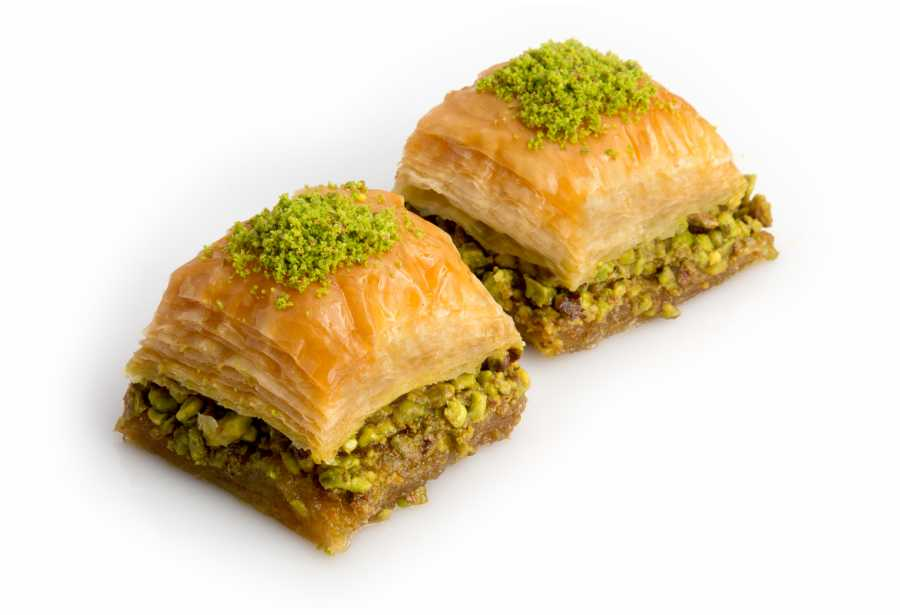

Turkse zoete lekkernij met pistache, lekker voor bij de high tea of als dessert!
Bereiding Laat het filodeeg volgens verpakking ontdooien. Het is belangrijk dat als je de vellen uit de verpakking haalt ze onder een vochtige theedoek legt om uitdroging te verkomen. Verwarm de oven op 165 graden en hak de pistachenootjes fijn. Vet de ovenschaal in met wat boter. Snijd de vellen filodeeg doormidden of zo dat ze in de schaal passen. Leg een velletje op de bodem en bestrijk met boter. Leg er een ander velletje op en herhaal dit totdat de helft van het bladerdeeg op is. Verdeel de pistache er over en dek af met een velletje filodeeg en bestrijk weer met boter. Herhaal totdat alle vellen filodeeg op zijn. Besprenkel de resterende boter over de bovenzijde en zet 35 minuten in de oven totdat de bovenzijde mooi goudbruin en knapperig is. Verhit het water met de suiker en roer totdat alle suiker opgelost is. Giet het suikerwater over de baklava en laat afkoelen.Bestrooi eventueel nog met wat fijngemalen pistache kruimels.
